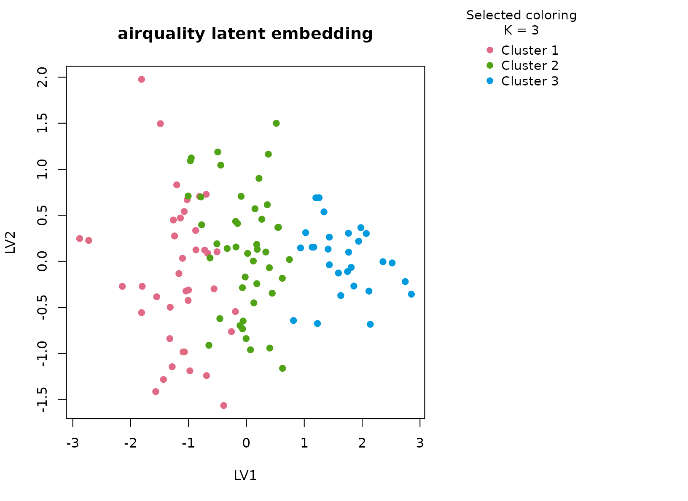
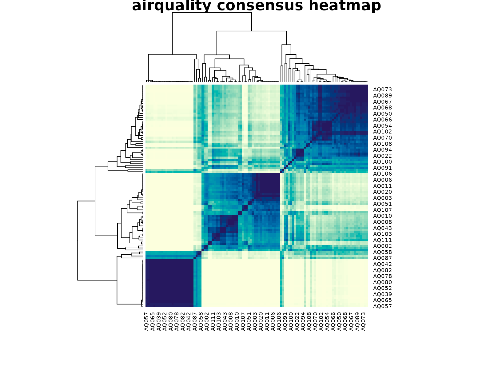

Background
airquality is a classic environmental dataset containing
ozone, solar radiation, wind, temperature, and calendar information
measured in New York. It is a good first real-data analysis for
uccdf because the variables are easy to name but not
redundant: ozone and solar radiation reflect atmospheric conditions,
wind changes pollutant dispersion, temperature tracks seasonal warming,
and month encodes broad calendar position without being a full numeric
surrogate for the weather itself.
Objective
The analytical question is not simply whether hot days differ from cool days. Instead, the goal is to determine whether the cleaned table contains reproducible day-level weather regimes that jointly differ in ozone burden, radiation, wind, and seasonal timing, and to inspect whether the resulting clusters look like coherent environmental profiles rather than a trivial month ordering.
Data preparation
aq <- na.omit(airquality)
aq$sample_id <- sprintf("AQ%03d", seq_len(nrow(aq)))
aq$Month <- ordered(month.abb[aq$Month], levels = month.abb[5:9])
aq$temp_band <- ordered(
cut(aq$Temp, breaks = c(-Inf, 75, 85, Inf), labels = c("cool", "warm", "hot")),
levels = c("cool", "warm", "hot")
)
analysis_aq <- aq[, c("sample_id", "Ozone", "Solar.R", "Wind", "Temp", "Month", "temp_band")]
head(analysis_aq)
#> sample_id Ozone Solar.R Wind Temp Month temp_band
#> 1 AQ001 41 190 7.4 67 May cool
#> 2 AQ002 36 118 8.0 72 May cool
#> 3 AQ003 12 149 12.6 74 May cool
#> 4 AQ004 18 313 11.5 62 May cool
#> 7 AQ005 23 299 8.6 65 May cool
#> 8 AQ006 19 99 13.8 59 May coolAnalysis
fit_aq <- fit_uccdf(
analysis_aq,
id_column = "sample_id",
candidate_k = 1:5,
n_resamples = 20,
n_null = 39,
row_fraction = 0.85,
col_fraction = 0.85,
seed = 222
)
fit_aq$selection
#> $alpha
#> [1] 0.05
#>
#> $global_p_value
#> [1] 0.025
#>
#> $null_family
#> [1] "independence_marginal_null"
#>
#> $detected_structure
#> [1] TRUE
#>
#> $best_exploratory_k
#> [1] 3
#>
#> $best_supported_k
#> [1] 3
select_k(fit_aq)
#> k stability null_mean null_sd stability_excess z_score p_value supported
#> 1 2 0.4757027 0.2371619 0.03329055 0.2385408 7.165419 0.025 TRUE
#> 2 3 0.4993815 0.1949587 0.03455417 0.3044228 8.810013 0.025 TRUE
#> 3 4 0.5811901 0.2518767 0.04810240 0.3293135 6.846090 0.025 TRUE
#> 4 5 0.6369593 0.3341007 0.06416907 0.3028586 4.719697 0.025 TRUE
#> objective
#> 1 7.026790
#> 2 8.590291
#> 3 6.568831
#> 4 3.397810Results
aq_assign <- merge(augment(fit_aq), aq, by.x = "row_id", by.y = "sample_id", all.x = TRUE)
head(aq_assign)
#> row_id cluster confidence ambiguity exploratory_cluster
#> 1 AQ001 1 0.6770229 0.3229771 1
#> 2 AQ002 1 0.7009817 0.2990183 1
#> 3 AQ003 1 0.8198792 0.1801208 1
#> 4 AQ004 1 0.7973333 0.2026667 1
#> 5 AQ005 1 0.7658862 0.2341138 1
#> 6 AQ006 1 0.8423069 0.1576931 1
#> exploratory_confidence exploratory_ambiguity assignment_mode selected_k
#> 1 0.6770229 0.3229771 selected 3
#> 2 0.7009817 0.2990183 selected 3
#> 3 0.8198792 0.1801208 selected 3
#> 4 0.7973333 0.2026667 selected 3
#> 5 0.7658862 0.2341138 selected 3
#> 6 0.8423069 0.1576931 selected 3
#> exploratory_k Ozone Solar.R Wind Temp Month Day temp_band
#> 1 3 41 190 7.4 67 May 1 cool
#> 2 3 36 118 8.0 72 May 2 cool
#> 3 3 12 149 12.6 74 May 3 cool
#> 4 3 18 313 11.5 62 May 4 cool
#> 5 3 23 299 8.6 65 May 7 cool
#> 6 3 19 99 13.8 59 May 8 cool
aggregate(
cbind(Ozone, Solar.R, Wind, Temp, confidence) ~ cluster,
aq_assign,
function(x) round(mean(x, na.rm = TRUE), 2)
)
#> cluster Ozone Solar.R Wind Temp confidence
#> 1 1 16.56 145.31 12.16 67.79 0.77
#> 2 2 34.61 196.16 10.34 79.82 0.80
#> 3 3 89.43 221.96 6.22 88.54 0.90
table(aq_assign$cluster, aq_assign$Month)
#>
#> May Jun Jul Aug Sep
#> 1 21 4 3 2 9
#> 2 2 5 10 12 15
#> 3 1 0 13 9 5
table(aq_assign$cluster, aq_assign$temp_band)
#>
#> cool warm hot
#> 1 36 3 0
#> 2 4 36 4
#> 3 0 7 21
round(prop.table(table(aq_assign$cluster, aq_assign$Month), margin = 1), 3)
#>
#> May Jun Jul Aug Sep
#> 1 0.538 0.103 0.077 0.051 0.231
#> 2 0.045 0.114 0.227 0.273 0.341
#> 3 0.036 0.000 0.464 0.321 0.179
plot_embedding(fit_aq, color_by = "selected", main = "airquality latent embedding")
plot_consensus_heatmap(fit_aq, main = "airquality consensus heatmap")
Discussion
The three-cluster solution is useful because each group has a different environmental signature. In a typical fit, one cluster concentrates hotter days with elevated ozone and stronger solar radiation, another cluster is defined by higher wind and more moderate ozone despite comparable calendar timing, and the third cluster sits between those regimes. The month table helps show that the solution is not just “May versus August”. July and August observations are redistributed across at least two consensus groups once wind and radiation are considered jointly.
That detail matters for interpretation. If the method were only tracing a single temperature gradient, the latent scatter would look like one elongated cloud and the consensus heatmap would be close to a smooth diagonal fade. Instead the heatmap tends to show block structure with only a modest fringe of borderline days, which is exactly what we want from a stability-first exploratory summary.
Interpretation
For airquality, the clusters should be read as
reproducible daily weather profiles with different pollution-dispersion
conditions. One group corresponds to hotter and more ozone-heavy days,
one to windier and lower-burden days, and one to intermediate mixed
conditions. That is a descriptive rather than causal statement, but it
is still valuable: it turns a small mixed environmental table into a set
of defensible regimes that can be reviewed, plotted, and compared
without pretending that the data support a mechanistic latent-state
model.